MIDI Tape Recorder Documentation
MIDI Tape Recorder Documentation
Welcome
Thanks for taking the time to read through this documentation.
Once you understand how to connect MIDI Tape Recorder (MTR) to your gear and plugins, and what the buttons do, you should not have to read it again. MTR was designed to be fun, intuitive and unobtrusive.
MIDI Tape Recorder can record any MIDI channel voice messages that it receives and reproduces those perfectly upon playback.
Note: MTR will not record any MIDI system messages.
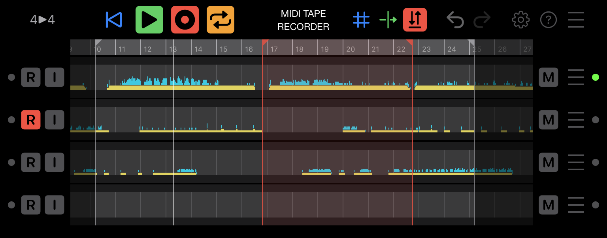
Making Connections
Since MTR is an AUv3 plugin, you need to first make a connection to one of the MIDI Inputs, and then another connection from one of the MIDI Outputs.
Controller to MTR to synth
Typically you will connect a physical MIDI Controller (like LinnStrument) or a MIDI Controller App (like GeoShred) to a MIDI Input and connect a MIDI Synthesizer (like Animoog Z, Model 15, Minimoog Model D) to a MIDI Output.
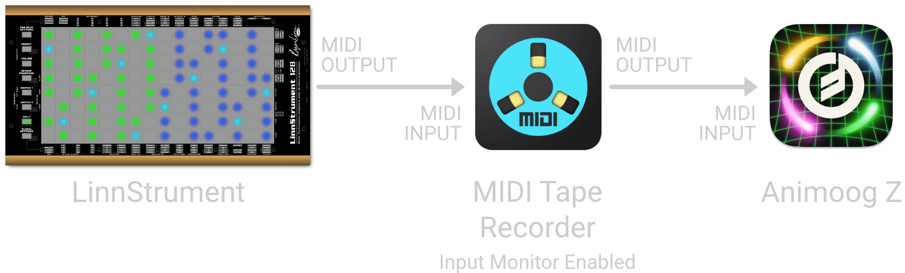
In order to hear what you're playing on the Controller, you'll have to enable Input Monitor for the appropriate track in MIDI Tape Recorder. This passes the MIDI that's received immediately through to the output, even when MTR is not playing.
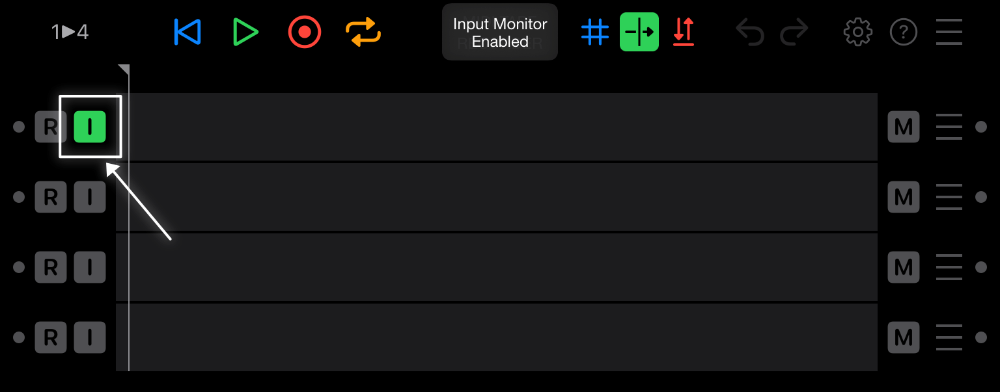
To verify that MIDI is being received and sent correctly, you can play your controller and check the activity lights inside MTR on left and right edge of each track. If they flicker green, MIDI is going through correctly.
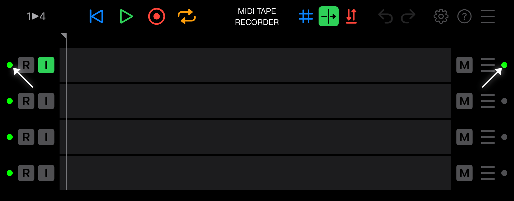
Each DAW and plugin host has their own way of making MIDI connections, please refer to the manual of your preferred host for details.
As an example, this is what the MIDI routing could look like inside the AUM host on iOS.
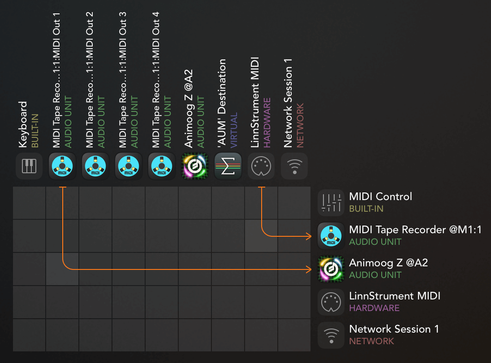
Synths that are also controllers
Some plugins can both act as MIDI Controllers and MIDI Synthesizers (like Animoog Z), in that case you can connect the same plugin to both the MTR MIDI Input and Output.
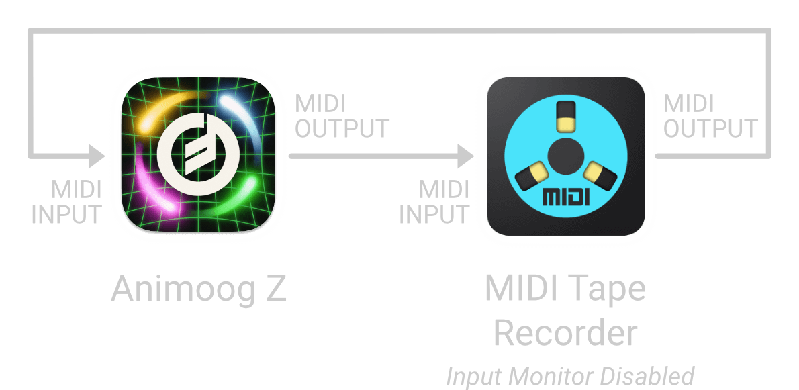
Now, make sure to disable Input Monitor for the appropriate track in MTR because otherwise similar messages will be used twice by the same synthesizer, which can lead to unexpected results.
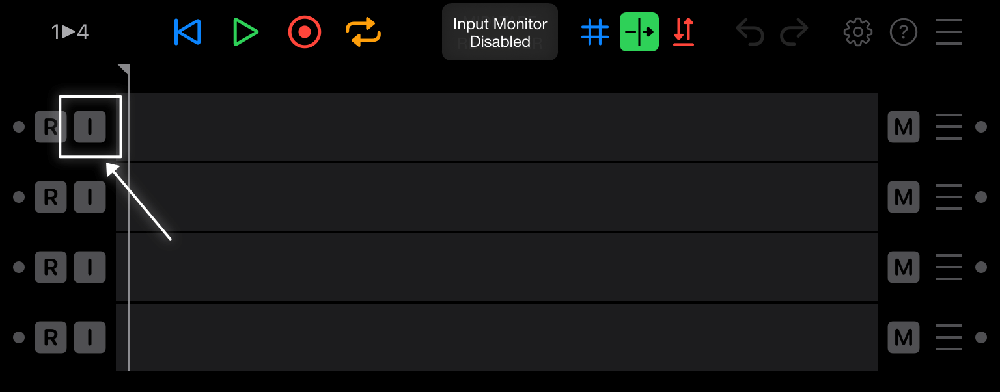
Each DAW and plugin host has their own way of making MIDI connections, please refer to the manual of your preferred host for details.
As an example, this is what the MIDI routing could look like inside the AUM host on iOS.
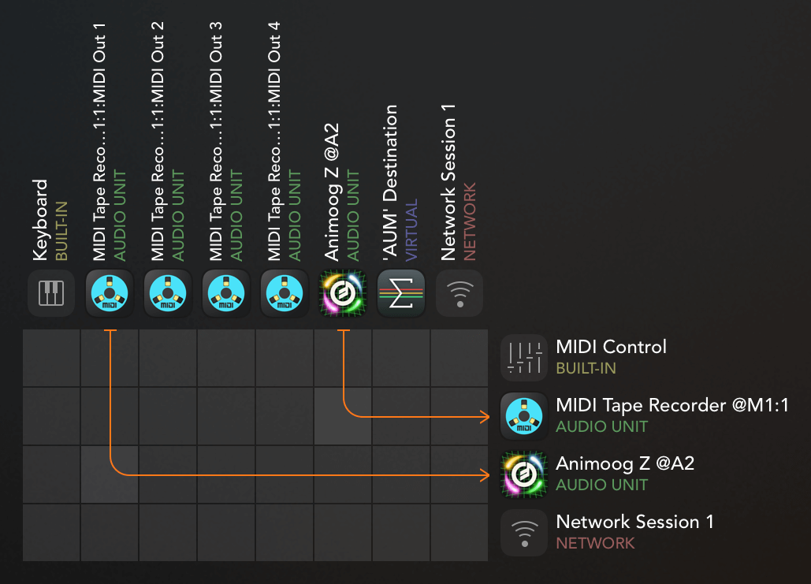
Multiple MIDI input connections
MIDI Tape Recorder supports a newer AUv3 feature where multiple virtual MIDI Input cables can be used for a single plugin. As of this writing the only host that supports this is AUM v1.4.0 beta and later.
When your host supports multiple input cables, MIDI Tape Recorder has four independent MIDI Input ports available for connection.
By tapping on the 1 ▶︎ 4 toggle button, you can change it to 4 ▶︎ 4 and have MIDI Tape Recorder use the four MIDI input ports.
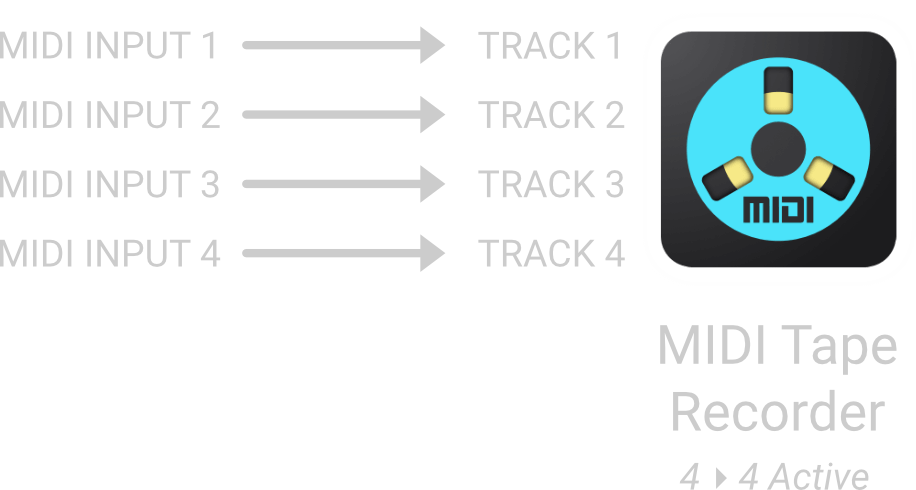
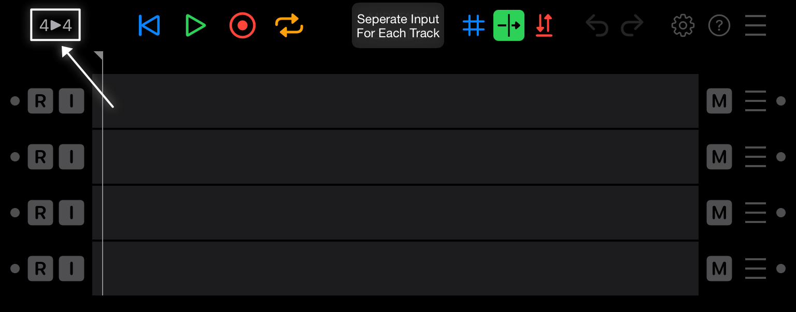
Tapping 4 ▶︎ 4 will change it back to 1 ▶︎ 4 and MIDI Tape Recorder will go back to only using one MIDI Input port.
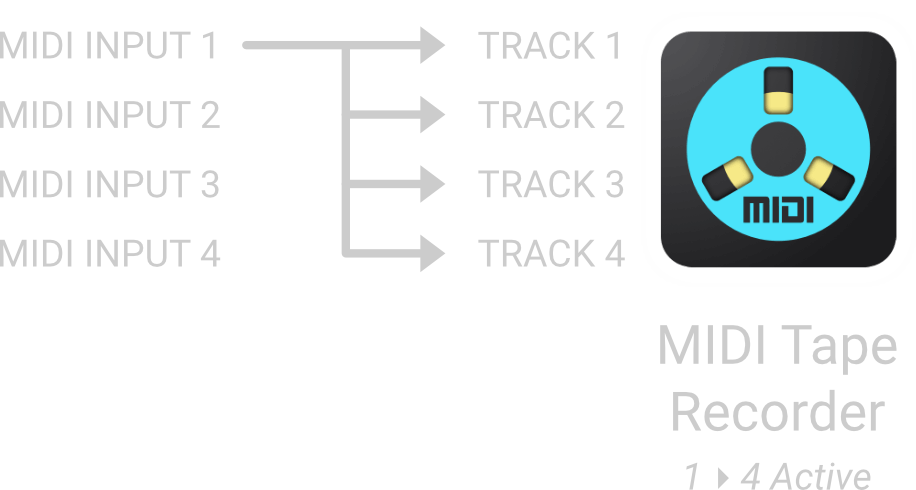
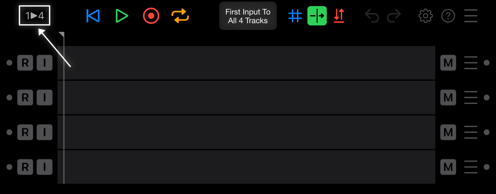
By using the four separate inputs you can keep different controllers connected and routed to dedicated synth plugins. However when routing the first input to all four tracks, the same controller can easily be used for all the synths you're recording. It's really up to you to decide which configuration is the most appropriate for what you're trying to achieve, they both are useful.
Make a Recording
Now that everything is connected and that you've verified that the input activity lights are working, press Record Enable on a track and press Record Arm in the toolbar.
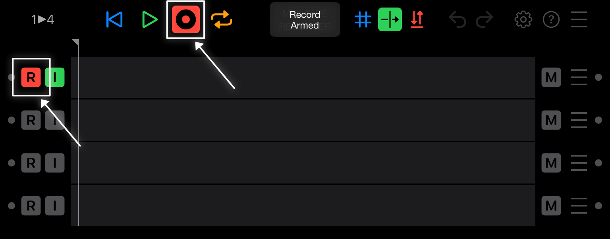
As soon as you start playing on your controller, MIDI Tape Recorder will record your performance.
Note: you can also press Play in your host and MIDI Tape Recorder will automatically start recording at the same time.
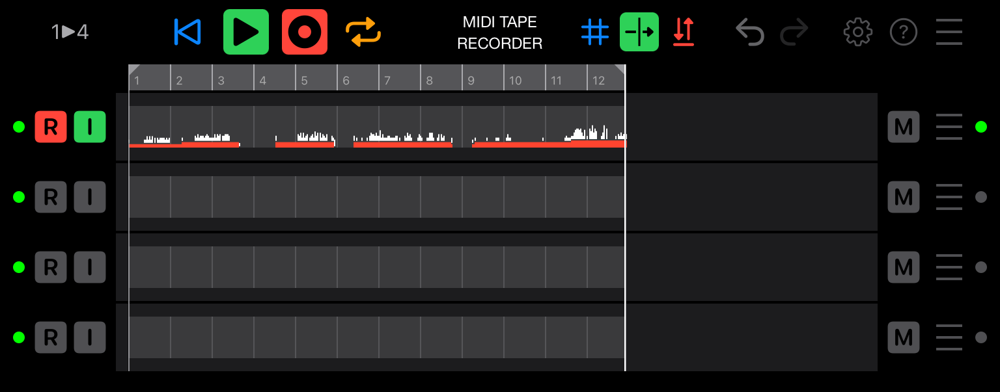
When you're done, press the Play button to stop recording and press Play again to hear what you've recorded, or press the Repeat button while recording to immediately start looping in case you want to play or record over it with another synth.
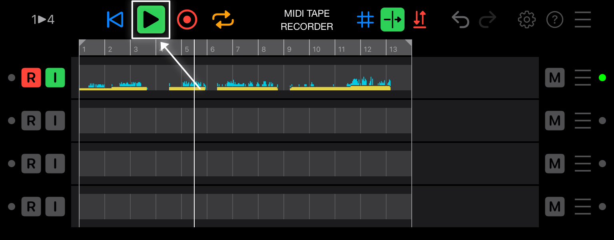
The MIDI Tape Recorder GUI
This section contains a complete reference of the MIDI Tape Recording GUI.
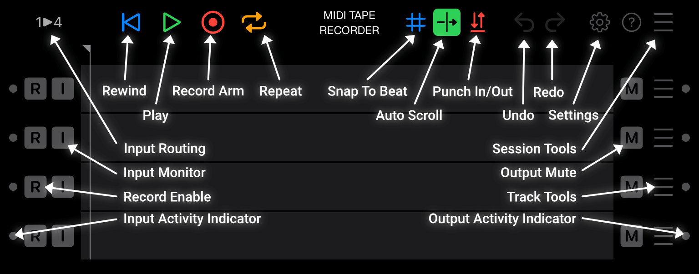
Track controls
-
Input Activity Indicator:
Lights green when MTR receives MIDI for the track.
-
Record Enable:
When enabled (red), record MIDI messages to the track.
-
Input Monitor:
When enabled (green), pass MIDI messages received for the track straight through to the output.
-
Output Mute:
When enabled (yellow), don't output any messages for the track.
-
Track Tools:
When pressed, access additional track-specific tools.
-
Output Activity Indicator:
Lights green when MTR outputs MIDI for the track.
Session controls
-
Input Routing:
Switches between sending the first input channel to all tracks, or using a dedicated input channel for each track. (only supported on some hosts)
-
Rewind:
When pressed, returns to the loop start marker, or the beginning of the recording, depending on where the playhead is.
-
Play:
When pressed, either starts or stops moving the playhead. If record is enabled, this will also start or stop recording. Play will automatically adapt to the transport state of the host.
-
Record Arm:
When enabled, recording will start when the playhead is moving.
-
Repeat:
When enabled, playback and recording will loop between the start and stop locators. When Record Arm is enabled, it will stay enabled while repeating until you've recorded at least one MIDI message during the current loop, after that Record Arm will automatically turn off.
Repeat can be enabled during recording to immediately end the recording and start looping.
-
Snap To Beat:
When enabled, snap the loop, punch in/out and playhead markers to the beat after dragging them to a new position.
-
Auto Scroll:
When enabled, the visible area of your recorder will automatically scroll to keep the playhead visible.
-
Punch In/Out:
When enabled, only record MIDI messages between the punch in/out locators when Record Arm is enabled.
-
Undo:
When pressed, undo the last recording change you made.
-
Redo:
When pressed, redo the last recording change you undid.
-
Settings:
When pressed, show the global settings dialog.
-
Session Tools:
When pressed, access additional session-specific tools.